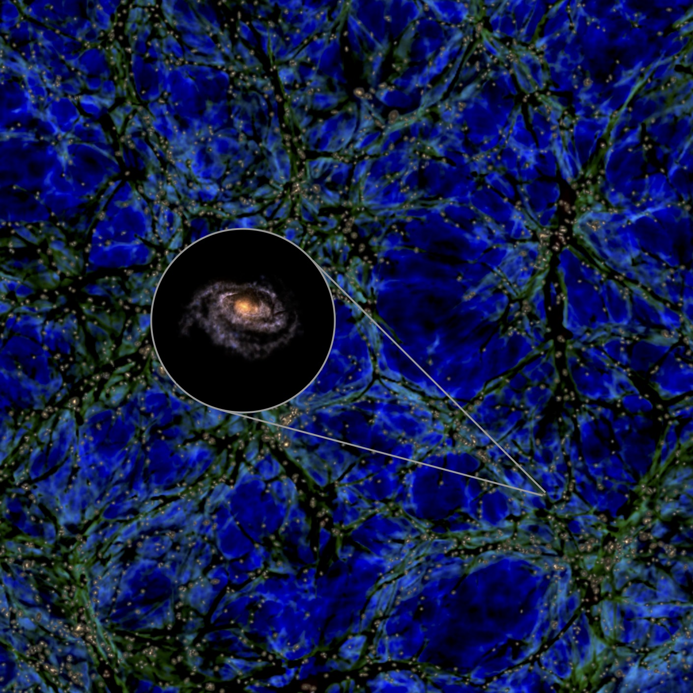

The Unusual Milky Way-Local Sheet System: Implications for Spin Strength and Alignment
This page contains additional high resolution images.
A Milky Way Analogue sitting at the center of a flat wall of smaller galaxies (grey spheres). The blue circles indicate distance from the Milky Way Analogue in 1 Mpc intervals. The background image shows the distribution of dark matter (green and blue) and galaxies (here seen as tiny yellow dots) in a thin slice of the cubic volume in which we expect to find one of such rare massive galaxies. Credit: Images: Miguel A. Aragon-Calvo. Simulation data: Illustris TNG project (https://www.illustris-project.org).
A flat wall of galaxies (grey spheres) with a massive Milky Way Analogue at its center. The blue circles indicate distance from the Milky Way Analogue in 1 Mpc intervals. The background image shows a thin slice of the volume in which we expect to find one of such rare massive galaxies. Credit: Images: Miguel A. Aragon-Calvo. Simulation data: Illustris TNG project (https://www.illustris-project.org).

A lonely Milky Way Analogue galaxy, too massive for its wall. The background image shows the distribution of dark matter (green and blue) and galaxies (here seen as tiny yellow dots) in a thin slice of the cubic volume in which we expect to find one of such rare massive galaxies. Credit: Images: Miguel A. Aragon-Calvo. Simulation data: Illustris TNG project (https://www.illustris-project.org).
The Local Sheet, a flat wall of galaxies surrounding the Milky Way (indicated by a spiral pattern). The blue circles indicate distance from the Milky Way in 1 Mpc intervals. Credit: Images: Miguel A. Aragon-Calvo. Simulation data: Illustris TNG project (https://www.illustris-project.org).
A Local Sheet Analogue in the Illustris TNG300 simulation, a flat wall of galaxies surrounding a Milky Way Analogue galaxy (large sphere at the center). The blue circles indicate distance from the central galaxy in 1 Mpc intervals. Credit: Images: Miguel A. Aragon-Calvo. Simulation data: Illustris TNG project (https://www.illustris-project.org).